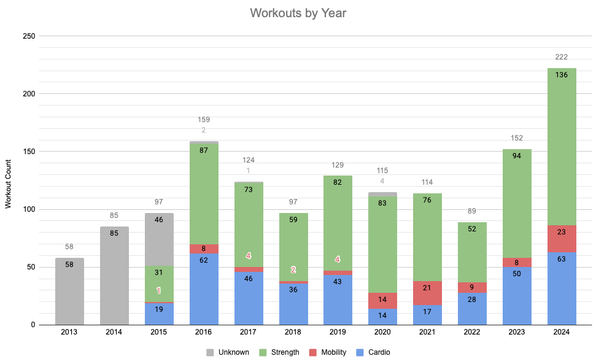
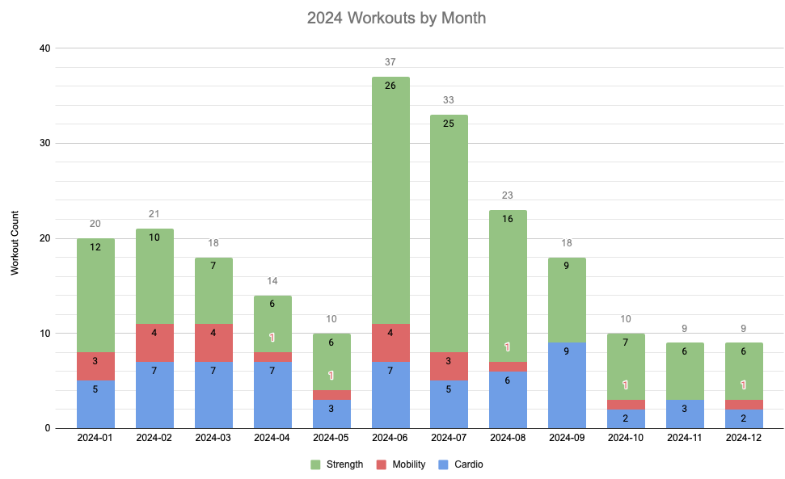
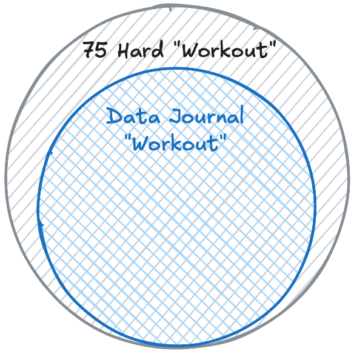
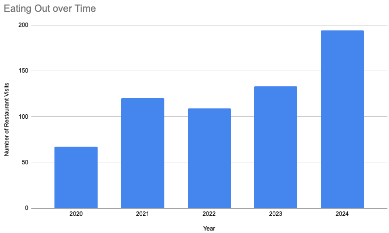
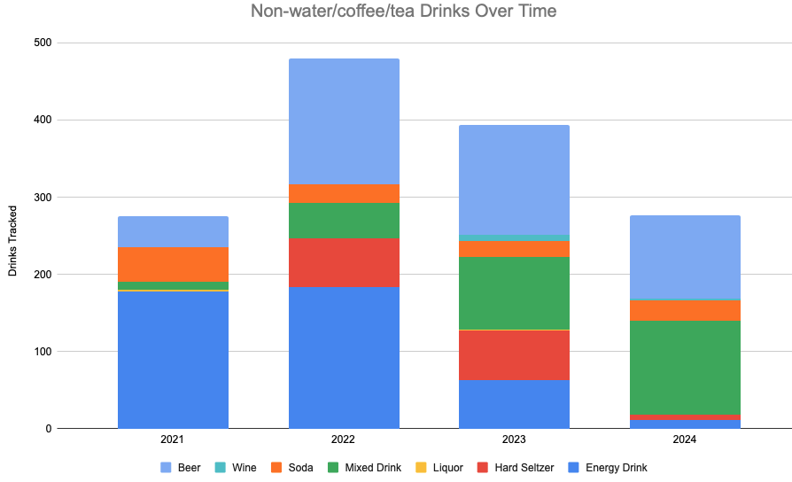
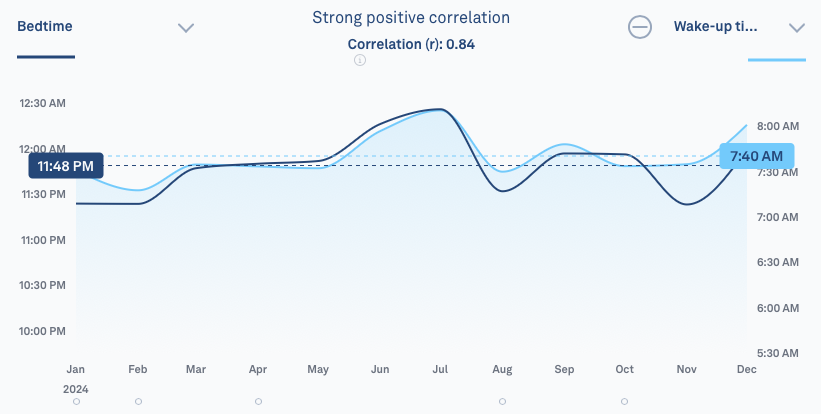
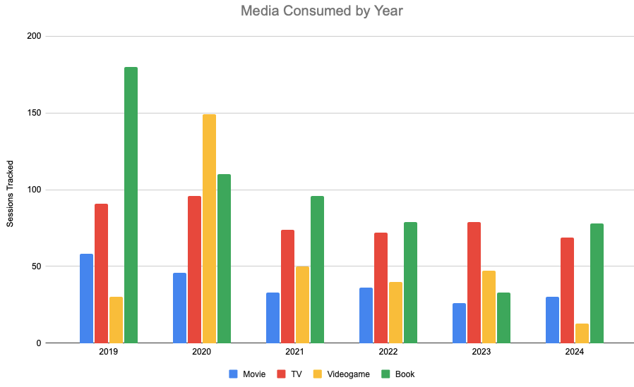

This is my annual “Year in Review” and goal-setting Column. Before we get into the thick of it, though…
The Times, They are a Changin’
In so many ways, right now feels like the space between eras. Obviously this is a “year in review” post, so the simple transition between years is in play - but it’s more than that. Some ways are exciting, other ways are bittersweet, and yet other ways I’m not enthusiastic about at all.
- My youngest is starting up after-school activities. This means most nights of the week we will be running the boys to and fro. We’re entering into that “all I do is drive people places” era.
- A podcast I’ve listened to for 8 years is ending.1 They were a big comedy influence on me. It’s a real bummer.
- I’m starting grad school! I’ll get to learn cool new stuff, but the era of homework begins anew.
- I stopped trying to make my Personal Data Warehouse a fully home-grown thing and reverted back to a humble spreadsheet, giving it the new2 moniker of Data Journal to mark the transition.
- Politics.
The previous bit of my life has been very good to me. I hope the new era can be as good as the previous one was.
Aaron “Wrapped”
It feels like every app I have an account with has come out with a feature mimicking “Spotify Wrapped”. I got annual summaries from Spotify itself, my weightlifting app, my podcast app, Endel, Google Photos, and YouTube… and those are just the ones I remember.
I was ahead of the curve on this “this year I the data say I did…”. See 2023, 2022, 2021, 2020, 2019, 2018, 2017, 2016, 2015. Looks like this is my 10th annual “Year in Review” Column.
2024 Year in Data
Sorry in advance about how often 75 Hard gets mentioned here. It affected everything immensely.
Heath
Exercise
Success
Goal: Work out 183 times
Result: 222 Workouts
More so than anything else on this list, this year we succeeded at working out. Thanks in particular to the 75 Hard, I far surpassed my “admittedly ambitious” goal.. As a result, Melissa and I are the fittest we’ve ever been.3

So that’s awesome. What’s less awesome is how poorly I’ve done on my Infinite Firm goals post 75 Hard.

You may note I claimed adherence to the 75 Hard “Workout x2 per Day” rule, but the math for the chart doesn’t line up. That’s because what I constituted as a 75 Hard “2nd workout” doesn’t perfectly overlap what I deem a “trackable workout”.

Eating Out
Fail
Goal: Eat out 122 times
Result: 194 times ate out
This is essentially the opposite of the above result. This was somewhat the result of me driving into the office more than I was expecting, but more so just due to laziness leading up to the 75 Hard (and some level of return to laziness after). I’d like to reign this number back next year.

This looks worse than it is, probably. I didn’t eat out much in 2020 compared to usual, for obvious reasons. 2021 was not much different, for reasons that weren’t much different. Still, this is probably the thing I’ll pay the most attention to in 2025.
Drinks
I track any drink that’s not water, coffee, or tea. Basically if it’s not those things, it gets lumped in as a “less healthy” drink. These numbers reflect soda, energy drinks, and alcoholic drinks.
Success
Goal: Reduce & broaden drink varieties
Result: Reduced by ~25-30%
This was actually pretty much a perfect continuation of previous habits, aside from the 75 Day stint that had none. I am still pretty happily with this result. I’d like to see a further reduction here, probably.

I used to have an energy drink more days than not. This year I only had 11. So that’s good. However that’s been offset by a minor increase in mixed drinks, which are not better for you. Still, the total is equivalent to “a couple a week”, which ends up looking like more than it sounds like.
Sleep
Caution
Goal: Keep up healthy sleep habits
Result: Bedtime ❌, duration ✅
My sleep duration has averaged out nicely, but something happened with my bedtime around the time we were doing the 75 Hard where it slipped back significantly. My global “average” bedtime is about 11:20 PM. By the end of 75 Hard I was averaging 12:25 AM. This whole timeframe needs shifted forward some.

That chart was straight from my Oura ring, btw.
Content Creation
Notes
Success
Goal: add ~200 new notes
Result: 334 new notes
I’m still writing notes at a rate of ~1/day. This year’s notes ventured more into business-ey things. That’s the macro trend. These are all hosted at https://gillespedia.com, by the way.
Columns
Success
Goal: Write ~18 Columns
Result: 20 Columns, including this one
I’ve settled in on the ~1.5 Columns/month cadence. I like it.
Other Stuff
Success
Goal: Reintroduce ad-hoc creation tracking
Result: Success!
Content Consumption
Tldr
I guess I’m a reader?

Books
Success
Goal: Read 18 books
Result: 31 1/2 books
Apparently I read a lot? I was surprised to see this number. Hooray.
Movies
Fail
Goal: Watch 36 new movies
Result: 22 new movies, 30 total movies
I thought 2024 was a bit of a downer year in terms of movies. Aside from Dune 2, no movies really blew me away this year. I’m not sure if that’s caused my movie number to fall short of the goal, but it certainly didn’t help. For a guy who claims to love movies, I sure don’t watch many.
TV
Success
Goal: Keep pace with ~75 TV sessions
Result: 70 sessions
I watch TV a little more than 1/week. This year I kept that pace. I watched 18 different shows. SNL was the most consistent. The worst show was Marvel’s Echo. The best was my re-watch of Jury Duty.
Games
Success
Goal: Play through 2 videogames
Result: Success - I finished
- Animal Well
- Fallout: New Vegas
- Rise of the Golden Idol
I like videogames. I’d like to play them slightly more than I do.4
Podcasts
Caution
Goal: Slow down on podcast listening
Result: Nope.
I don’t know exactly how much time I spent listening to podcasts in 2023, but I think 2024 was pretty much the same. I imagine this number will go down in 2025 since my favorite podcast is ending.
YouTube
Fail
Goal: Watch less YouTube
Result: The opposite
I said that eating out was my biggest failure of the year. Actually it was YouTube. My numbers are skewed by me being signed in on the family TV, so I get views tracked for things the boys watch… but still most of it is me. And I’m well above an average of 10 videos/day. That’s astounding. YouTube is the reason my TV and movie numbers aren’t high.
On a related note - I just got YouTube Premium for the year. So I’m sure that will help. :-|
Social
I more or less realized I wasn’t tracking social outings during this year, so the data aren’t really here to back up any results. In 2024 I started hanging out with a few new friends, which was cool. We got in some good dates. We got in some good trips for the sake of the boys. Did a couple of concerts. Went to an awesome wedding. 2024 was a good mix of things. On the whole I’m fairly pleased. Could always use more; but there are only so many hours in the day, days in the week, and weeks in the year.
2024 Year in Projects
This was a very project-heavy year.
Revisiting Project Goals from Column 447
- Vacations - the biggest failure of this year. Aside from (multiple) trips to Silver Dollar City, this year was essentially vacation-less. Easily the most disappointing aspect of the year.
- Add a modestly-sized new feature to the PDW - not sure how to classify this. Success? Then I tore it down and started from scratch? Then I tore that down and started from scratch again?
- Finish some more house projects - one giant one crowded out all others. We did the master bath & closet, including the floor, walls, and a brand new shower.
- Start Up a Podcast - success, although we had to slow down production to a crawl of nominally 1 episode per month, we are still at it! Episode 19 just came out.
- Create another Puzzle Box - success! You can even play it by clicking here!
- Migrate this Website - success! Although my goals changed from what I wrote a year ago, I achieved them.
Other Project-y Things
In addition to the list above, this year I:
- Became a developer of a published Obsidian plugin with >4000 installs as of now
- Did a 75 Hard (have I mentioned that?) with Melissa
2025 Themes
The YouTuber GCPGrey has a philosophy re: New Year’s Resolutions that he explains very well in this video.
While I have found actual resolutions to be very helpful for me, personally, I also like the idea of a theme for the year.
The Year of “Let it Be”
There are a number of connotations of “let it be” that I’d like to apply to my life. In general, it’s a commitment to trying not to worry about stuff as much.5 More specifically means these things, at a minimum:
- Don’t mess with the Data Journal or my productivity system.6 They are both working well. Just use them.
- Better accept that which you cannot (or should not) control.
- Finding replacement behaviors for some anxious habits I’ve tried kicking for years.
Tracking Goals for 2025
Nothing dramatically different from last year here, but for the sake of continuity here they are.
5. Content Creation
- Write 18 Columns
- Add 300 new notes
- Post 12 new Podcast episodes
4. Content Consumption
- Read 20 books
- Watch 36 new movies
- Play through 3 videogames
- Keep pace on TV viewing
3. Social
Same as last year. Since the most recent Data Journal I’ve got a better reason to track these, so hopefully these can turn into hard numbers next year. Some of these are quite ambitious, but they are where I’d like to be.
- Capture 52 quotes
- See friends 26 times
- See family 26 times
- Go on 13 dates
- See 4 concerts
- Do 13 fun outings (e.g. bowling, golfing, etc)
2. Health
- Move forward my average bed and wake time to 11:00 and 7:00, respectively
- Work out 183 times - every other day
- Eat out 156 times - that’s 3x/week, which should be doable
- Drink 156 trackable drinks - same as above
1. Don’t Retool the Data Journal
LET IT BE.
Top 5: Project Goals for 2025
5. Learn 2 New (coding) Languages
Specifically, Python & Lua.
4. Model & 3D Print Something
3D printing seems cool. I’d like to learn the process.
3. Build a new Puzzle Box
I’ve got a couple of ideas, not committing to a name or theme yet. May combine nicely with the above 2 goals.
2. Finish the Basement
An ambitious goal, but overdue.
1. Succeed at School
Don’t fail at school and don’t let school make me fail at life outside of school.
Quote:
Everything’s a hammer. Except a screwdriver, and that’s a chisel. - Stretch
Footnotes
-
I don’t share the name because literally nobody who I know reads this would enjoy it, but I sure did. ↩
-
Technically this is a lie. It was Data Journal once before, briefly. But whatever. ↩
-
Or at least we look as in shape as ever, fitness tests reveal I’m not as strong as I once was, but nor did I expect to be ↩
-
Although still no where near as much as I once did ↩
-
Deeply ironic in a Column about the 99 goals I have for next year ↩
-
More on this next Column. ↩